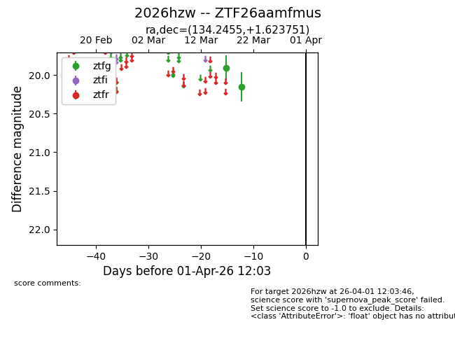
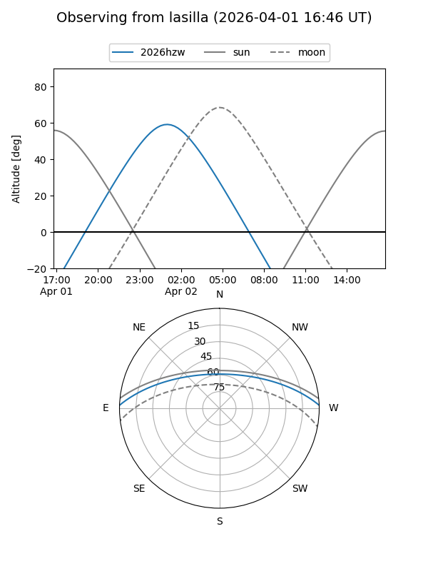
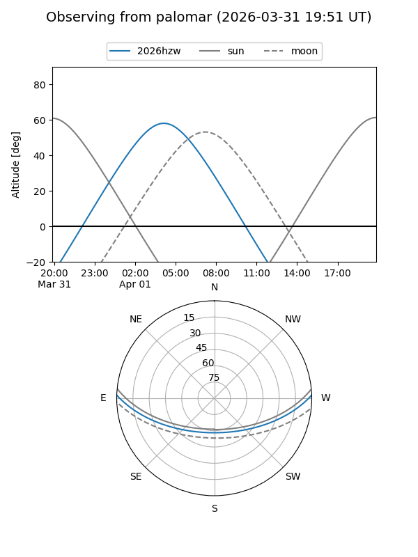

2026hzw
Target 2026hzw at 2026-04-01 12:07
Aliases and brokers:
FINK: link
Lasair: link
ALeRCE: link
TNS: link
YSE: link
alt names
ZTF26aamfmus (ztf,fink_ztf)
2026hzw (tns,yse)
Coordinates:
equatorial (ra, dec) = 134.2455,+1.62375
equatorial (HMS+DMS) = 08:56:58.92,+01:37:25.50
galactic (l, b) = (226.8941,+28.44021)
Flags:
Photometry:
last ztfg=20.15
2 ztfg detections
Lightcurve

Visibility


Additional plots